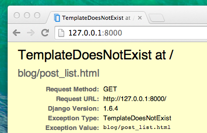

Créons nos vues Django!
Il est enfin temps de se débarrasser du bug que nous avons créé dans le chapitre précédent :)
C'est dans la vue que nous allons ranger toute la partie "logique" de notre application. C'est elle qui va se charger d'aller chercher les informations liées à notre modèleque nous venons de créer et de les passer à un template. Nous allons créer ce template dans le chapitre suivant. Concrètement, les vues ne sont que des méthodes Python un peu plus élaborées que celles que nous avons manipulées dans la partie Introduction à Python.
Les vues sont placées dans le fichier views.py. Nous allons créer nos vues dans le fichier blog/views.py.
blog/views.py
Ok, allons-y ! Ouvrons ce fichier pour voir ce qu'il contient :
from django.shortcuts import render
# Create your views here.
Il n'y pas encore grand chose dans ce fichier.
Les lignes qui commencent par # permettent de commenter notre code : ces lignes ne seront donc pas exécutées par Python. Pratique, non ?
La vue la plus simple que l'on peut créer ressemble à ceci :
def post_list(request):
return render(request, 'blog/post_list.html', {})
Comme vous pouvez le voir, nous avons créé une méthode (def) appelée post_list qui prend une request (requête) et return (retourne) une méthode render qui va permettre d'assembler tout ça selon notre template blog/post_list.html.
Sauvegardez votre fichier et allez à l'adresse http://127.0.0.1:8000/ pour voir ce qui s'affiche maintenant.
Une autre erreur ! Voyons ce qu'elle nous dit :

Celle-là est plutôt simple : TemplateDoesNotExist. Corrigeons ça en créant un template dans la section suivante !
Pour en apprendre un peu plus sur les vues dans Django, consultez la documentation officielle : https://docs.djangoproject.com/fr/1.11/topics/http/views/